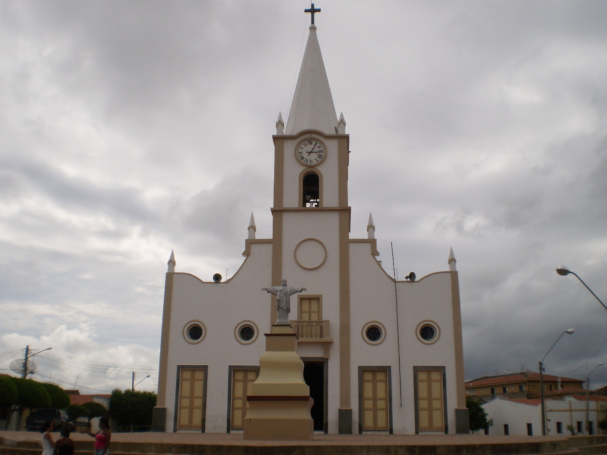

Informações técnicas sobre relevo, população, IDH etc.
| INFORMAÇÕES | |
|---|---|
| Municípios limítrofes | Jaguaretama, Jaguaribara, Pereiro, Icó, Orós, Solonópole |
| Fundação | 8 de novembro de 1864 |
| População total | 34 409 hab. |
| Densidade | 18,3 hab./km² |
| Área total | area_total |
| Clima | Semiárido |
| Altitude | 119,4 m |
| IDH | 0,672 — alto |
| PIB | 451 695,057 mil |
| INFORMAÇÕES TERRITORIAIS | |
|---|---|
| Número de habitantes | 34 409 hab. |
| Superfície de Jaguaribe |
31 493 hectares
1877 km² (121,60 sq mi) |
| Densidade populacional | 18,3 hab./km² |
| Altitude de Jaguaribe | 119,4 metros de altitude |
| Coordenadas geográficas decimais |
Latitude:
5° 53' 12'' Sul
Longitude: 38° 37' 13'' Oeste |
| Coordenadas geográficas sexagesimais | Latitude: 5° 53' 12'' Sul , Longitude: 38° 37' 13'' Oeste |
| INFORMAÇÕES DO MUNICÍPIO | |
|---|---|
| Endereço da Prefeitura Municipal de Jaguaribe |
Jaguaribe
Prefeitura de Jaguaribe
Pça. Senador Fernandes Távora, s/n Jaguaribe - CE, 63475-000 Brasil Work (88) 3522-1092 Fax (88) 3522-1770 |
| Telefone da prefeitura |
(88) 3522-1092
Internacional: +55 (88) 3522-1092 |
| Fax |
(88) 3522-1092
Internacional: +55 (88) 3522-1092 |
| Endereço electrónicoda prefeitura |
A carregar...
|
| Site oficial do município | jaguaribe.ce.gov.br |
| INFORMAÇÕES DO ADMINISTRATIVAS | ||
|---|---|---|
| Prefeito de Jaguaribe | ALEXANDRE GOMES DIOGENES | |
| Partido politico | PSD | |
| INFORMAÇÕES DE TRANSPORTE | |
|---|---|
| Transporte urbano disponível | --- |
| Aeroporto |
Aeroporto Dix-Sept Rosado 158.7 km
Aeroporto Regional do Cariri 164.8 km
Aeroporto Internacional Pinto Martins 235.1 km
|
| INFORMAÇÕES DE DISTÂNCIA A OUTRAS CIDADES | ||
|---|---|---|
| São Paulo : 2373 km | Rio de Janeiro : 1957 km | Brasília : 1499 km |
| Salvador : 789 km | Belo Horizonte : 1655 km | Manaus : 2395 km |
| Curitiba : 2454 km | Recife : 478 km mais perto | Goiânia : 1669 km |
| Belém : 1203 km | Porto Alegre : 2995 km | Guarulhos : 2124 km |
| Campinas : 2100 km | São Luís : 733 km | São Gonçalo : 2182 km |
| Distância calculada em linha reta! | ||
Conheça mais sobre a história de Jaguaribe.
Jaguaribe-mirim, como inicialmente se chamou o núcleo, era denominação do riacho, braço do Rio Jaguaribe (posteriormente Catingueira e Santa Rosa), transmitido ao sítio à sua margem, cuja construção é atribuída a os irmãos Francisco e Manuel Martins, vindos de Pernambuco. As terras, devolutas, foram mais tarde concedidas em sesmaria ao capitão João da Fonseca Ferreira, possuidor do sítio Santa Rosa desde 1697, tendo sido um dos primeiros povoadores da região. Já em princípios do século XVIII Fonseca Ferreira doou o Jaguaribe - mirim a seu genro, coronel Manuel Cabral, que o vendeu ao padre Domingos Dias da Silveira, cura da vila do Icó. Mais tarde, arrematada em leilão pelo padre João Martins de Melo, a propriedade foi doada a Francisco Eduardo Pais de Melo, por escritura de 25 de maio de 1786, para constituir seu patrimônio de ordenação. Com a morte deste, o sítio foi dividido entre 14 credores por despacho de 9 de fevereiro de 1813 do Ouvidor Antônio Manuel Galvão. Com o desenvolvimento do povoado, que se estendeu pela margem direita do rio Jaguaribe, desapareceu de sua designação a partícula mirim, resultando o nome atual, que é o mesmo do rio.
Saiba mais sobre os melhores lugares e o que fazer em Jaguaribe.
Igreja Matriz de Nossa Senhora das Candeias
As primeiras manifestações datam da edificação da capela dedicada a Santo Antônio, no início do Século XVIII, onde atualmente se localiza o distrito de Mapuá. O primeiro vigário da antiga capela, mais tarde transformada em Igreja-Matriz e hoje voltou ao título de capela, foi o padre Teodulfo Franco Pinto Bandeira. No dia 18 de novembro de 1872, a Nossa Senhora das Candeias foi nomeada padroeira da cidade. Atualmente tem como pároco o Padre José Peixoto Alves, que em 30 de dezembro de 2013 foi empossado pelo Bispo da Diocese de Limoeiro do Norte, Dom José Haring. Tem como vigário paroquial o Padre Mauro Monteiro da Silva, que desde 1973 tem se dedicado à atividade pastoral no Jaguaribe. O Padre José de Fátima Lima Chagas também passou pela Paróquia de Jaguaribe, onde ocupou por um curto período a função de vigário paroquial, hoje exercida pelo Padre Mauro. A Igreja Matriz de Jaguaribe que teve sua origem na construção da capela primitiva em louvor de nossa Senhora das Candeias, remonta ao século XVIII, quando o Sítio Jaguaribe-Mirim no último quartel, já estava com habitações que justificavam a existência de um orago, em tomo do qual iam-se construindo novas moradias, formando assim um pequeno núcleo habitacional. Prova do que afirmamos encontra-se documentada nos termos lavrados nas visitas, pelo padre José de Almeida Machado, às Freguesias do Ceará, entre os anos de 1805 e 1806, por provisão de Dom Joaquim da Cunha de Azeredo Coutinho, dada em Olinda a 25 de abril de 1805 e assinada por Manoel Vieira de Lemos Sampaio Governador do Bispado, registrando à época a existência da capela de Jaguaribe como adiante é transcrito: "José de Almeida Machado, cura e vigário da vara do Cariri-novo, foi nomeado visitador da comarca do Ceará por provisão de Dom José Joaquim da Cunha de Azeredo Coutinho, dada em Olinda a 25 de Abril de 1805 e assignada pelo Governador do Bispado Manoel Vieira de Lemos Sampaio. Prestou juramento de bem cumprir os deveres de visitador nas mãos do Vigário do Riacho do Sangue, no lugar Santa Rosa, a 15 de julho do mesmo ano a 18 nomeou secretário da visita o Presbítero Secular Manoel Antônio de Pinho. As provisões de ambos e os termos de juramento estão registrados integralmente no livro das devassas."
Veja como chegar nos melhores pontos de Jaguaribe